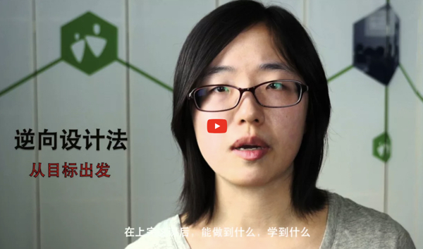

高雄輔導團領域素養研習資料
1.
投影片
資訊科技理念與素養導向課程設計
資料處理專題課程分享與實作(一)
資料處理專題課程分享與實作(二)學習評量方式探討
2.
課前問卷
請問您為何來參加今天的研習?
請問您對於108課綱相關概念的理解程度為何
3.
相關文件
十二年國民基本教育課程綱要(總綱)
十二年國民基本教育課程綱要[科技領域](領綱)
十二年國教課綱國民中學標準本位評量示例-科技領域-資訊科技
十二年國民基本教育領域課程綱要核心素養發展手冊
素養導向「紙筆測驗」要素與範例試題
跨領域素養導向課程設計初階工作坊實踐手冊
基於UbD理論之技職課程設計與實踐(PDF)
4.
相關網站
不插電的資訊科學
偷插電的資訊科學
Computational Thinking – in Computer Science Course Design
SBASA十二年國教課綱國民中小學素養導向標準本位評量計畫
科技課程網站
BlockPy
https://www.mentimeter.com/
https://note.ly/
5.
UbD教學影片
逆向設計法

反向設計
Author: Yung-Chin Yen
Created: 2022-04-27 Wed 23:33